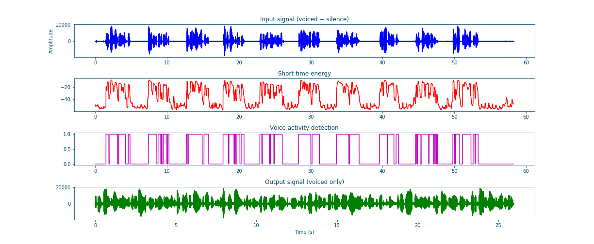

Naive voice activity detection using short time energy¶
An important part of speech/speaker recognition tasks is distinction of voiced segments from silent ones. This helps -for example- align phonemes with their associated voiced segments and avoid any extra information related to silence/ noise that would degrade the system’s accuracy. This problem is known as Voice Activity Detection (VAD). This blog aims to introduce voice activity detection and present simple short time energy based VAD implementation.
What is voice activity detection ?¶
Voice activity detection is a speech/signal processing technique in which the presence or absence of human speech is detected. VAD is often used in speech coding and speech recognition but it also helps optimize and speed audio dependent approach like speaker recognition.
Why do we do need voice activity detection?¶
As mentioned before VAD is very useful in many audio processing related tasks. A couple of these uses are highlighted in the following list:
In speech recognition, VAD helps improve the quality by masking the effect of silent frames and noise.
In Speech enhancement, VAD can be used to collect silent frames to get a good noise estimation for example.
In Speaker recognition, VAD allows for better quality detection since the recognition will be based only on “pure” speech frames.
In many other applications, VAD is used to accelerate the processing and avoid extra runs for silent frames.
How to implement it?¶
The basic assumption behind short time energy based VAD is that voiced frames has more energy than silent. Therefore, we can frame the signal, compute the short time energy aka the energy pro frame and according to a predefined threshold we can decide where the frame is voiced or silent [Bac19]. These steps can be summarized in the following:
Frame signal (refer to Signal_framing).
Assuming a signal \(S\), this can be formulated as follows: \(S = \sum_{n=0}^{N_s-1} x[n] = \sum_{i=0}^{\#F-1} f[i]\) where:
\(S\): Discrete signal.
\(x[n]\): Signal sample in time domain.
\(N_s\) : Signal length in samples.
\(f[i]\): Signal frame.
\(\#F\) : Number of frames.
Compute the energy per frame aka short time energy.
The short time energy can be assumed to be the total energy of each. The energy pro frame is \(E_f = \sum_{n=0}^{N_f - 1} |x[n]|^2\), and consequently the normalized short time energy value, is \(\overline{E}_f = \frac{1}{N_f - 1}.\sum_{n=0}^{N_f - 1} |x[n]|^2\). Based on the Parseval’s theorem, we can use the Discrete_Fourrier_transform_ to compute the energy since: \(\sum_{n=0}^{N_f - 1} |x[n]|^2 = \frac{1}{N_f - 1}.\sum_{n=0}^{N_f - 1} |X[n]|^2\). To summarize: \(\overline{E}_f = \frac{1}{(N_f - 1)^2}.\sum_{n=0}^{N_f - 1} |X[n]|^2\)
with:
\(E_f[n]\): Frame total energy.
\(\overline{E}_f[n]\): Normalized frame total energy.
\(x[n]\): Signal sample in the time domain.
\(X[n]\): Signal sample in the frequency domain.
\(N_f\) : Frame length in samples.
\(F[i]\): Signal frame.
\(\#F\) : Number of frames.
A standard practice is to convert the computed energy to Decibels using a suitably chosen \(E_0\) (Energy value characterizing the silence to speech energy ratio):
\begin{equation} \overline{E}_{f_{dB}} = 10 ⋅ \log_{10}(\frac{\overline{E}_f}{E_0}) \end{equation}Construct VAD array using threshold comparison the energy.
By comparing the short time energy values to a predefined energy threshold, we compute the VAD as follows:
\begin{equation} VAD[n]=\left\{\begin{array}{ll} {0,} & {\overline{E}_f[n] \leq threshold \implies Silence} \\ {1,} & {\overline{E}_f[n] > threshold \implies Speech} \end{array}\right. \end{equation}with:
\(VAD[n]\): The Voice Activity Detection array.
\(\overline{E}_f[n]\): Normalized frame total energy.
Compute the voiced Signal.
\begin{equation} \widetilde{S}[n]= S[n] . VAD[n] \end{equation}with:
\(\widetilde{S}[n]\): Silence filtered signal.
\(VAD[n]\): The Voice Activity Detection array.
\(S[n]\) : The original signal.
The code for the previous steps is the following (I added a visualization function to help visualize the concept):
1 2 3 4 5 6 7 8 9 10 11 12 13 14 15 16 17 18 19 20 21 22 23 24 25 26 27 28 29 30 31 32 33 34 35 36 37 38 39 40 41 42 43 44 45 46 47 48 49 50 51 52 53 54 55 56 57 58 59 60 61 62 63 64 65 66 67 68 69 70 71 72 73 74 75 76 77 78 79 80 81 82 83 84 85 86 87 88 89 90 91 92 93 94 95 96 97 98 99 100 101 102 103 104 105 106 107 108 109 110 111 112 113 114 115 116 117 118 119 120 121 122 123 124 125 126 127 128 129 130 131 132 | import scipy
import numpy as np
import scipy.signal
import scipy.io.wavfile
import matplotlib.pyplot as plt
def stride_trick(a, stride_length, stride_step):
"""
apply framing using the stride trick from numpy.
Args:
a (array) : signal array.
stride_length (int) : length of the stride.
stride_step (int) : stride step.
Returns:
blocked/framed array.
"""
nrows = ((a.size - stride_length) // stride_step) + 1
n = a.strides[0]
return np.lib.stride_tricks.as_strided(a,
shape=(nrows, stride_length),
strides=(stride_step*n, n))
def framing(sig, fs=16000, win_len=0.025, win_hop=0.01):
"""
transform a signal into a series of overlapping frames (=Frame blocking).
Args:
sig (array) : a mono audio signal (Nx1) from which to compute features.
fs (int) : the sampling frequency of the signal we are working with.
Default is 16000.
win_len (float) : window length in sec.
Default is 0.025.
win_hop (float) : step between successive windows in sec.
Default is 0.01.
Returns:
array of frames.
frame length.
Notes:
------
Uses the stride trick to accelerate the processing.
"""
# run checks and assertions
if win_len < win_hop: print("ParameterError: win_len must be larger than win_hop.")
# compute frame length and frame step (convert from seconds to samples)
frame_length = win_len * fs
frame_step = win_hop * fs
signal_length = len(sig)
frames_overlap = frame_length - frame_step
# compute number of frames and left sample in order to pad if needed to make
# sure all frames have equal number of samples without truncating any samples
# from the original signal
rest_samples = np.abs(signal_length - frames_overlap) % np.abs(frame_length - frames_overlap)
pad_signal = np.append(sig, np.array([0] * int(frame_step - rest_samples) * int(rest_samples != 0.)))
# apply stride trick
frames = stride_trick(pad_signal, int(frame_length), int(frame_step))
return frames, frame_length
def _calculate_normalized_short_time_energy(frames):
return np.sum(np.abs(np.fft.rfft(a=frames, n=len(frames)))**2, axis=-1) / len(frames)**2
def naive_frame_energy_vad(sig, fs, threshold=-20, win_len=0.25, win_hop=0.25, E0=1e7):
# framing
frames, frames_len = framing(sig=sig, fs=fs, win_len=win_len, win_hop=win_hop)
# compute short time energies to get voiced frames
energy = _calculate_normalized_short_time_energy(frames)
log_energy = 10 * np.log10(energy / E0)
# normalize energy to 0 dB then filter and format
energy = scipy.signal.medfilt(log_energy, 5)
energy = np.repeat(energy, frames_len)
# compute vad and get speech frames
vad = np.array(energy > threshold, dtype=sig.dtype)
vframes = np.array(frames.flatten()[np.where(vad==1)], dtype=sig.dtype)
return energy, vad, np.array(vframes, dtype=np.float64)
def multi_plots(data, titles, fs, plot_rows, step=1, colors=["b", "r", "m", "g", "b", "y"]):
# first fig
plt.subplots(plot_rows, 1, figsize=(20, 10))
plt.subplots_adjust(left=0.125, right=0.9, bottom=0.1, top=0.99, wspace=0.4, hspace=0.99)
for i in range(plot_rows):
plt.subplot(plot_rows, 1, i+1)
y = data[i]
plt.plot([i/fs for i in range(0, len(y), step)], y, colors[i])
plt.gca().set_title(titles[i])
plt.show()
# second fig
sig, vad = data[0], data[-2]
# plot VAD and orginal signal
plt.subplots(1, 1, figsize=(20, 10))
plt.plot([i/fs for i in range(len(sig))], sig, label="Signal")
plt.plot([i/fs for i in range(len(vad))], max(sig)*vad, label="VAD")
plt.legend(loc='best')
plt.show()
if __name__ == "__main__":
# init vars
fname = "OSR_us_000_0060_8k.wav"
fs, sig = scipy.io.wavfile.read(fname)
#########################
# naive_frame_energy_vad
#########################
# get voiced frames
energy, vad, voiced = naive_frame_energy_vad(sig, fs, threshold=-35,
win_len=0.025, win_hop=0.025)
# plot results
multi_plots(data=[sig, energy, vad, voiced],
titles=["Input signal (voiced + silence)", "Short time energy",
"Voice activity detection", "Output signal (voiced only)"],
fs=fs, plot_rows=4, step=1)
# save voiced signal
scipy.io.wavfile.write("naive_frame_energy_vad_no_silence_"+ fname,
fs, np.array(voiced, dtype=sig.dtype))
|
The resulting plots clearly show a good performance of this simple and fast VAD.
{kind=link}
{kind=link}
I already tested the VAD using the following sample that can be downloaded from Open Speech Repository. The difference between the input and output shows that the VAD is functional.
| Input signal (voiced and silent frames) | Output signal (voiced only frames) |
|---|---|